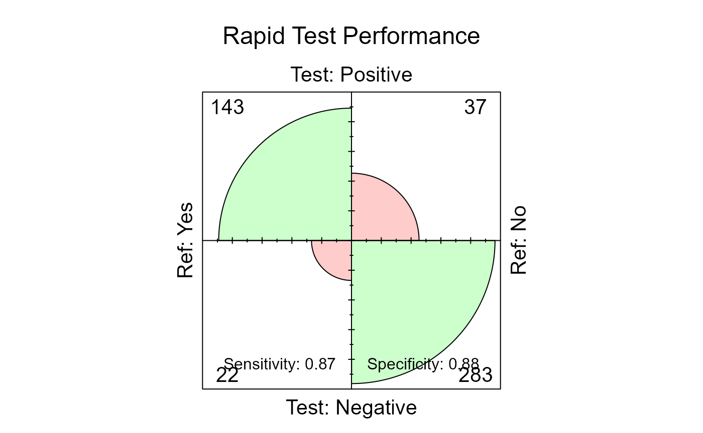

Welcome to SimtablR!
SimtblR is a lightweight package that brings together three essential tools for epidemiologic analysis:
-
tb()– Create publication-ready descriptive tables -
diag_test()– Evaluate diagnostic test performance -
regtab()– Generate multi-outcome regression tables
Let’s explore each function through practical examples using a realistic dataset.
Getting Started
First, load the package and example data:
library(SimtablR)
#> ── SimtablR 1.0.0 ───────────────────── Simple R functions for usefull tables ──
#> ✔ tb(): Descriptive tables (One-Table)
#> ✔ diag_test(): Confusion matrix and Diagnostic Values
#> ✔ regtab(): Regression Tables by Outcome (GLM)
#> Use suppressPackageStartupMessages() to silence.
data(epitabl)Example Data
The epitabl dataset comes from a hypothetical
cross-sectional study of 500 adults examining risk factors for a chronic
disease. Let’s get acquainted:
Our study includes demographics (age, sex, education), health behaviors (smoking, exercise), clinical measures (BMI, blood pressure, cholesterol), and outcomes (disease status, healthcare utilization, hospitalization).
A note on the disease: About 30% of participants have the disease, making this a realistic prevalence for many chronic conditions:
tb(epitabl, disease)
#> Disease status (primary outcome) | Freq
#> ----------------------------------+------
#> No | 331
#> Yes | 169Part 1: Descriptive Tables with tb()
The tb() function is the Swiss Army knife of SimtablR. It is designed to replace the base R table() function for a good part of your workflow.
It handles:
- Counts and Percentages (Row, Column, Total)
- Statistical Tests (Chi-squared, Fisher, McNemar)
- Effect Measures (Prevalence Ratios, Odds Ratios)
- Stratification (3-way tables)
- Formatting for publication (Flextable integration)
1. Univariate Tables (Frequency)
The simplest use case is checking the distribution of a single variable. By default, tb() shows counts and percentages.
# Distribution of Smoking Status
tb(epitabl, smoking)
#> Smoking status | Freq
#> ----------------+------
#> Never | 244
#> Former | 158
#> Current | 982.Bivariate Tables (Cross-Tabulation)
The first variable is always the line and the second variable is the column. Let’s examine disease prevalence by smoking status:
# Disease status by Sex
tb(epitabl, smoking, disease)
#> | Disease status (primary outcome)
#> Smoking status | No Yes | Sum
#> ----------------+----------+-----
#> Never | 179 65 | 244
#> Former | 107 51 | 158
#> Current | 45 53 | 98
#> ----------------+----------+-----
#> Sum | 331 169 | 500You can control which percentage is calculated using the flags col
(column %), row (row %), or p (total %). If you need to be more
specific, add or remove decimal places using d (d for
decimal!)
# Disease status by Sex
tb(epitabl, smoking, disease, row, d =3)
#> | Disease status (primary outcome)
#> Smoking status | No Yes | Sum
#> ----------------+-----------------------------+-----
#> Never | 179 (73.361%) 65 (26.639%) | 244
#> Former | 107 (67.722%) 51 (32.278%) | 158
#> Current | 45 (45.918%) 53 (54.082%) | 98
#> ----------------+-----------------------------+-----
#> Sum | 331 169 | 500Style table vales
Use the style argument to change how numbers are presented. Common
formats are n (pct) or pct (n). use {p} or {n}
to display percentages and frequency, respectively. Using them you can,
for example, have the percentages outiside the parenthesis and frquency
inside:
# Showing "% (n)"
tb(epitabl, smoking, disease, row, style = "{p}% ({n})")
#> | Disease status (primary outcome)
#> Smoking status | No Yes | Sum
#> ----------------+-------------------------+-----
#> Never | 73.4% (179) 26.6% (65) | 244
#> Former | 67.7% (107) 32.3% (51) | 158
#> Current | 45.9% (45) 54.1% (53) | 98
#> ----------------+-------------------------+-----
#> Sum | 331 169 | 500Adding Statistical Evidence
Is there a real association, or could this pattern occur by chance?
Set test = TRUE to automatically calculate a p-value (Chi-squared or
Fisher’s exact test, depending on sample size). You can also determine
it manually. For frequency tables, you can set "chsqr"
(Pearson’s Chi-squared), "fisher" (Fisher’s Exact Test) or
"mcnemar" (McNemar).
tb(epitabl, smoking, disease, col, test= "chsqr") #could also use test= TRUE
#> | Disease status (primary outcome)
#> Smoking status | No Yes | Sum
#> ----------------+-------------------------+-----
#> Never | 179 (54.1%) 65 (38.5%) | 244
#> Former | 107 (32.3%) 51 (30.2%) | 158
#> Current | 45 (13.6%) 53 (31.4%) | 98
#> ----------------+-------------------------+-----
#> Sum | 331 169 | 500
#>
#> Test: Pearson's Chi-squared test p-value < 0.001We see something interesting. The prevalence varies across smoking groups, and the p-value suggests this is unlikely due to chance alone.
Prevalence Ratios (PR) and Odds Ratios (OR)
In cross-sectional studies, we often want the Prevalence Ratio (PR).
In case-control studies, the Odds Ratio (OR). tb()
calculates these with confidence intervals automatically.
Now that we know that the prevalence of disease is significantly
different across smoking categories, we can explore them with
or OR or pr PR:
# Calculate Prevalence Ratio of Disease by Smoking status
tb(epitabl, smoking, disease, col,
test = TRUE,
rp, # Calculates Prevalence Ratios; change for or to get ORs
ref = "Never", # Reference level for smoking group
conf.level = 0.95) # Define the level of confidence (0.95 by default)
#> | Disease status (primary outcome)
#> Smoking status | No Yes | Sum | PR (95% CI)
#> ----------------+-------------------------+-----+--------------------
#> Never | 179 (54.1%) 65 (38.5%) | 244 | 1.00 (Ref)
#> Former | 107 (32.3%) 51 (30.2%) | 158 | 1.21 (0.89 - 1.65)
#> Current | 45 (13.6%) 53 (31.4%) | 98 | 2.03 (1.54 - 2.68)
#> ----------------+-------------------------+-----+--------------------
#> Sum | 331 169 | 500 |
#>
#> Test: Pearson's Chi-squared test p-value < 0.001Note: Without ref, the function uses the first
factor level alphabetically. You can look at the levels of any variable
using levels(epitabl$smoking)
Continuous Variables
For continuous variables like age or blood pressure, we need to tell
tb() to treat them differently:
tb(epitabl, age, disease, var.type = c(age = "continuous"))
#> | Disease status (primary outcome)
#> Age in years | No Yes
#> --------------------+----------------------------------------
#> age [Median (IQR)] | 49.0 (40.7 - 56.6) 55.9 (48.2 - 61.8)
#>
#> | Disease status (primary outcome)
#> Age in years | Total
#> --------------------+--------------------
#> age [Median (IQR)] | 51.2 (43.1 - 58.3)By default, you get the median and interquartile range (IQR)—robust statistics that aren’t thrown off by outliers. If you prefer mean and standard deviation:
tb(epitabl, systolic_bp, disease,
var.type = c(systolic_bp = "continuous"),
stat.cont = "mean")
#> | Disease status (primary outcome)
#> Systolic blood pressure (mmHg) | No Yes | Total
#> --------------------------------+----------------------------+--------------
#> systolic_bp [Mean (SD)] | 111.6 (10.0) 123.1 (12.0) | 115.5 (12.0)Stratification
You can add a third layer of complexity by stratifying the table. For example, let’s look at the relationship between Disease and Smoking, but separated by Sex.
tb(epitabl, disease, smoking, col, strat = sex, test = TRUE)
#> | Smoking status
#> Disease status (primary outcome) | Female : Never Female : Former
#> ----------------------------------+---------------------------------
#> No | 92 (76.7%) 52 (64.2%)
#> Yes | 28 (23.3%) 29 (35.8%)
#> ----------------------------------+---------------------------------
#> Sum | 120 81
#>
#> | Smoking status
#> Disease status (primary outcome) | Female : Current Male : Never
#> ----------------------------------+--------------------------------
#> No | 21 (38.9%) 87 (70.2%)
#> Yes | 33 (61.1%) 37 (29.8%)
#> ----------------------------------+--------------------------------
#> Sum | 54 124
#>
#> | Smoking status
#> Disease status (primary outcome) | Male : Former Male : Current | Sum
#> ----------------------------------+-------------------------------+-----
#> No | 55 (71.4%) 24 (54.5%) | 331
#> Yes | 22 (28.6%) 20 (45.5%) | 169
#> ----------------------------------+-------------------------------+-----
#> Sum | 77 44 | 500
#>
#> Test: Pearson's Chi-squared test p-value < 0.001Currently, the columns now show every combination: Female-Never, Female-Former, Female-Current, Male-Never, and so on. You can visually compare patterns across strata. Note: PRs and ORs will not be calculated in stratified tables. For adjusted estimates accounting for multiple variables simultaneously, you’ll want regression (see bellow)
Exporting to Word/PowerPoint
The output of tb() is great for the console, but for
publication, you likely need a polished table. SimtablR integrates
seamlessly with the flextable
package.
# Create a table object
table <- tb(epitabl, smoking, disease, col,
test = TRUE,
rp,
ref = "Never",
conf.level = 0.95)
library(flextable) #load the flextable package to output into word or pptx
ft <- as_flextable(table)
ft <- autofit(ft) # Optional: Adjust column widths
ftDisease status (primary outcome) |
||||
|---|---|---|---|---|
Smoking status |
No |
Yes |
Sum |
PR (95% CI) |
Never |
179 (54.1%) |
65 (38.5%) |
244 |
1.00 (Ref) |
Former |
107 (32.3%) |
51 (30.2%) |
158 |
1.21 (0.89 - 1.65) |
Current |
45 (13.6%) |
53 (31.4%) |
98 |
2.03 (1.54 - 2.68) |
Sum |
331 |
169 |
500 |
|
Pearson's Chi-squared test: p-value < 0.001 | ||||
save_as_docx(ft, path = "Table1.docx")
save_as_pptx(ft, path = "Table1.pptx")Part 2: Diagnostic Test Evaluation with
diag_test()
Imagine you’re evaluating a new rapid diagnostic test for our disease. The gold standard is laboratory confirmation. Its accurate, but slow and expensive. Your rapid test is fast and cheap, but is it accurate enough? Let’s find out!
The Confusion Matrix
diag_test() automates the calculation of Sensitivity,
Specificity, Predictive Values (PPV/NPV), and Likelihood Ratios. Let’s
evaluate the performance of rapid_test against lab_confirmed (Gold
Standard) in our dataset. You must define what constitutes a “Positive”
result in both the test and the reference.
results <- diag_test(
data = epitabl,
test = rapid_test,
ref = lab_confirmed,
positive = "Yes"
)
#> Removed 15 observation(s) with missing values (3.0%).
#> Auto-detected test positive level: 'Positive'
print(results)
#>
#> ============================================================
#> DIAGNOSTIC TEST EVALUATION
#> ============================================================
#>
#> Sample Size: 485
#> Confidence Level: 95%
#>
#> Reference Standard (Gold Standard):
#> Positive: 'Yes' | Negative: 'No'
#>
#> Diagnostic Test:
#> Positive: 'Positive' | Negative: 'Negative'
#>
#> ------------------------------------------------------------
#> Confusion Matrix:
#> ------------------------------------------------------------
#> Ref
#> Test Yes No
#> Positive 143 37
#> Negative 22 283
#>
#> ============================================================
#> Performance Metrics (with 95% CI):
#> ============================================================
#> Sensitivity (Recall) : 0.867 (0.805 - 0.915)
#> Specificity : 0.884 (0.844 - 0.917)
#> Pos Pred Value (PPV) : 0.794 (0.728 - 0.851)
#> Neg Pred Value (NPV) : 0.928 (0.893 - 0.954)
#> Accuracy : 0.878 (0.846 - 0.906)
#> Prevalence : 0.340 (0.298 - 0.384)
#> ------------------------------------------------------------
#> Likelihood Ratio + : 7.495
#> Likelihood Ratio - : 0.151
#> Youden Index : 0.751
#> F1 Score : 0.829You can quickly visualize the Confusion Matrix using the generic
plot() function on the result object.
plot(results, main = "Rapid Test Performance")
The area of each quadrant reflects the number of observations. Large areas in the true positive and true negative quadrants indicate good performance.
Extracting Results for Reports
Need the metrics in a table format for a manuscript or report? You
can transform the results of diag_test into a dataframe
containing all the important metrics:
metrics_table <- as.data.frame(results)
print(metrics_table)
#> Metric Estimate LowerCI UpperCI
#> 1 Sensitivity (Recall) 0.8666667 0.8051165 0.9145175
#> 2 Specificity 0.8843750 0.8441612 0.9172694
#> 3 Pos Pred Value (PPV) 0.7944444 0.7279793 0.8509482
#> 4 Neg Pred Value (NPV) 0.9278689 0.8928271 0.9542465
#> 5 Accuracy 0.8783505 0.8459002 0.9060915
#> 6 Prevalence 0.3402062 0.2980962 0.3842785
#> 7 Likelihood Ratio + 7.4954955 NA NA
#> 8 Likelihood Ratio - 0.1507656 NA NA
#> 9 Youden Index 0.7510417 NA NA
#> 10 F1 Score 0.8289855 NA NAPart 3: Regression Tables with regtab()
You’ve described your data and evaluated your diagnostic test. Now
you want to understand which factors predict disease, healthcare
utilization, or other outcomes and you have multiple outcomes
to examine. This is when we use regtab().
Let’s say we want to understand healthcare utilization in our population. Specifically, we’ll examine three outcomes:
- Primary care visits (outcome1)
- Specialist visits (outcome2)
- Emergency department visits (outcome3)
All are count variables, so we’ll use Poisson regression. And we want to know: how do age, sex, disease status, and smoking affect each type of visit?
Poison Regression: Count outcomes
healthcare_model <- regtab(
data = epitabl,
outcomes = c("outcome1", "outcome2", "outcome3"),
predictors = ~ age + sex + disease + smoking,
family = poisson(link = "log"),
robust = TRUE,
labels = c(
outcome1 = "Primary Care",
outcome2 = "Specialist",
outcome3 = "Emergency Dept")
)
#> Auto-detected family 'poisson': Coefficients will be exponentiated.
print(healthcare_model)
#> Variable Result Outcome
#> 1 (Intercept) 2.33 (1.91 - 2.83) outcome1
#> 2 age 1.01 (1.00 - 1.01) outcome1
#> 3 sexMale 1.02 (0.94 - 1.11) outcome1
#> 4 diseaseYes 1.62 (1.49 - 1.77) outcome1
#> 5 smokingFormer 0.99 (0.90 - 1.09) outcome1
#> 6 smokingCurrent 1.00 (0.90 - 1.12) outcome1The function fitted three separate Poisson regression models (one per outcome) using the same predictors and outputs IIRs and CIs
Logistic Regression: Binary Outcomes
Now, let’s look at risk factors for Hospitalization (Binary: Yes/No).
hospital_model <- regtab(
data = epitabl,
outcomes = "hospitalized",
predictors = ~ age + disease + smoking + comorbidity_score,
family = binomial(link = "logit")
)
#> Auto-detected family 'binomial': Coefficients will be exponentiated.
print(hospital_model)
#> Variable Result Outcome
#> 1 (Intercept) 0.01 (0.00 - 0.03) hospitalized
#> 2 age 1.05 (1.02 - 1.07) hospitalized
#> 3 diseaseYes 3.01 (1.76 - 5.13) hospitalized
#> 4 smokingFormer 0.58 (0.30 - 1.12) hospitalized
#> 5 smokingCurrent 2.74 (1.51 - 4.96) hospitalized
#> 6 comorbidity_score 1.25 (0.83 - 1.89) hospitalizedThe coefficients are now odds ratios
Including P-values
hospital_model_p <- regtab(
data = epitabl,
outcomes = "hospitalized",
predictors = ~ age + disease + smoking + comorbidity_score,
family = binomial(),
p_values = TRUE
)
#> Auto-detected family 'binomial': Coefficients will be exponentiated.
print(hospital_model_p)
#> Variable Result Outcome P_Value
#> 1 (Intercept) 0.01 (0.00 - 0.03) hospitalized <0.001
#> 2 age 1.05 (1.02 - 1.07) hospitalized <0.001
#> 3 diseaseYes 3.01 (1.76 - 5.13) hospitalized <0.001
#> 4 smokingFormer 0.58 (0.30 - 1.12) hospitalized 0.106
#> 5 smokingCurrent 2.74 (1.51 - 4.96) hospitalized <0.001
#> 6 comorbidity_score 1.25 (0.83 - 1.89) hospitalized 0.288Now each outcome gets both an estimate column and a p-value column.
Linear (Gaussian) Regression: Continuous Outcomes
What predicts blood pressure and cholesterol? These are continuous outcomes, so we use Gaussian regression:
clinical_model <- regtab(
data = epitabl,
outcomes = c("systolic_bp", "cholesterol"),
predictors = ~ age + sex + bmi + exercise + smoking,
family = gaussian(),
labels = c(
systolic_bp = "Systolic BP (mmHg)",
cholesterol = "Cholesterol (mg/dL)"
),
d = 1 # 1 decimal place
)
print(clinical_model)
#> Variable Result Outcome
#> 1 (Intercept) 71.2 (66.0 - 76.3) systolic_bp
#> 2 age 0.5 (0.4 - 0.6) systolic_bp
#> 3 sexMale -1.0 (-2.6 - 0.6) systolic_bp
#> 4 bmi 0.8 (0.6 - 1.0) systolic_bp
#> 5 exerciseModerate -5.1 (-6.9 - -3.3) systolic_bp
#> 6 exerciseHigh -6.5 (-8.8 - -4.2) systolic_bp
#> 7 smokingFormer 1.1 (-0.8 - 3.0) systolic_bp
#> 8 smokingCurrent 3.1 (1.0 - 5.2) systolic_bpThese are linear (β) coefficients (not exponentiated)
Exporting Your Table
Since regtab() returns a standard data frame, you can easily export it to CSV or Excel for final formatting. You can also use flextable as before, though it is not necessary.
# Export to CSV
write.csv(clinical_model, "Table2_Regression_Results.csv", row.names = FALSE)Conclusion
The SimtablR package brings three essential epidemiologic tools into a single, coherent framework:
-
tb()eliminates the drudgery of descriptive table creation -
diag_test()makes diagnostic test evaluation straightforward and complete -
regtab()turns multi-outcome regression into a single function call
Each function prioritizes publication-ready output, statistical rigor, and sensible defaults—so you can focus on the science rather than the code.
I hope this package saves you time, reduces errors, and makes your analyses more reproducible. Now go forth and create some excellent tables.
Happy analyzing!